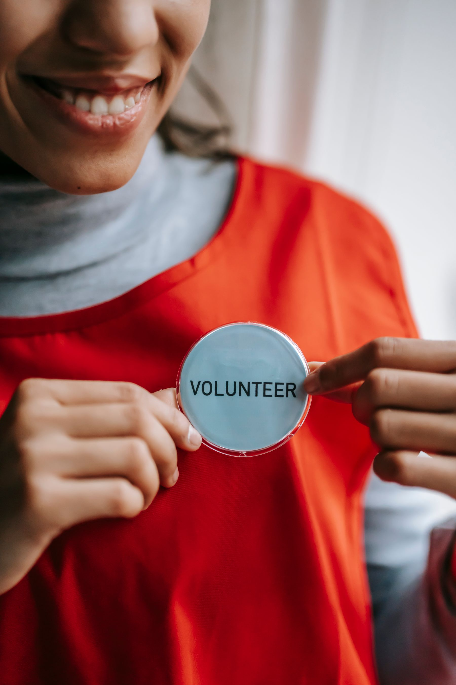
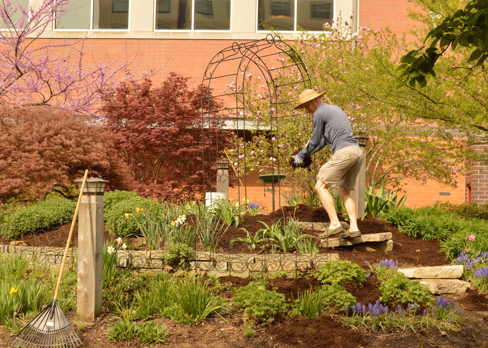
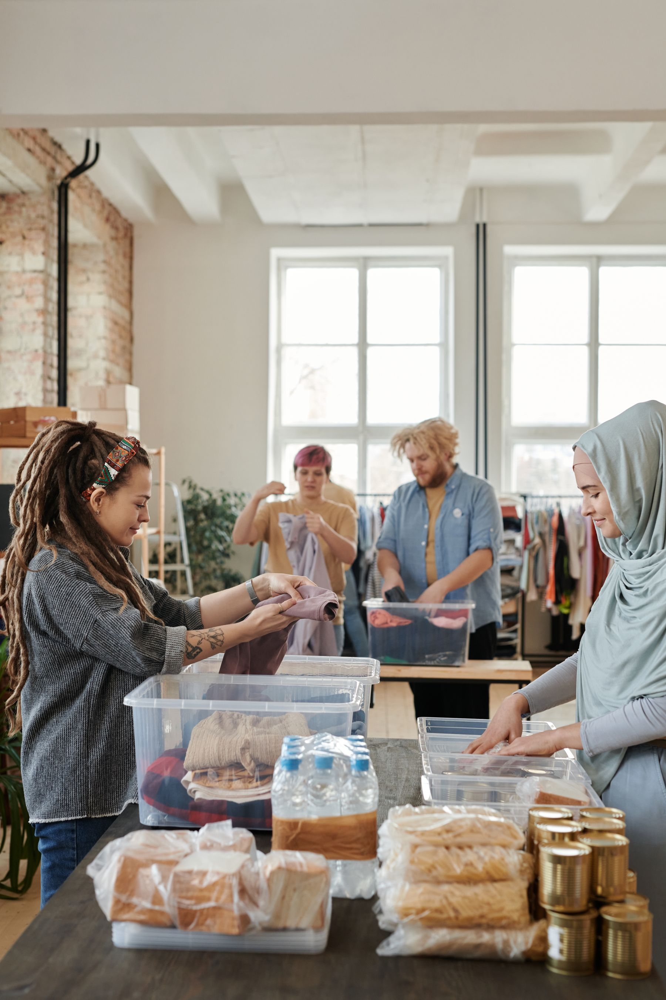

01
Food & essentials
A seat at the table.
Fresh food, shared meals, and everyday essentials. Because nobody should have to get by on empty.
A little care changes everything.
A full plate. An open door. A place to belong.
Let’s build a kinder community, together.
01 / Rooted in community
We believe a stronger community starts with the person next door. So we bring people together around the everyday things that matter: good food, a helping hand, and somewhere to feel at home.
There’s a place for you here ↗
02 / The work, on the ground
Practical support. Real connection.
Explore the programs in this concept.
Food & essentials
Fresh food, shared meals, and everyday essentials. Because nobody should have to get by on empty.

02Gardens & gathering
Shared gardens and open spaces that turn neighbours into friends, one growing season at a time.

03People & possibility
Welcoming spaces, useful connections, and people who listen. Support that starts with knowing your name.
03 / The everyday good
Step into the small moments that make a community. A glimpse of what Common Ground could look like.
Illustrative stories · Stock photography
A shared shift can be the start of a new friendship.
A warm welcome is a powerful place to begin.
A little patch of green. A deeper sense of belonging.
04 / Make a little room for good
An hour to spare? A skill to share? You don’t need to have it all figured out. Just bring yourself. We’ll start there.
Try the volunteer experience in this demo.
05 / A little goes a long way
Help put care into action. Explore a simple, thoughtful giving experience designed for a community nonprofit.
This is a fictional organisation and a design demo. No payments are taken.
Food. Friendship. A future we share.
Back to the good stuff ↑